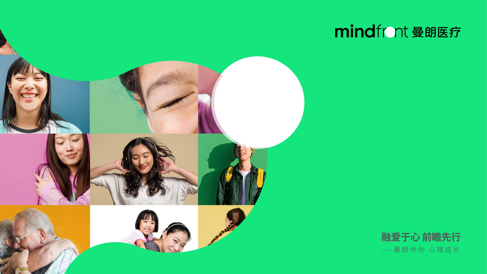

功能医学 × 营养精神医学
有些情绪，
身体早就知道。
从身体出发，理解情绪。
先读懂自己的信号，再找到适合你的支持。

CHAPTER 01
你是否也有这些感受？
不需要马上找到答案。先从那些最近反复出现的身体和情绪信号开始。
请选择与你相似的感受，可多选↓
已关注 0 / 7
也许你已经尝试过很多方法
去医院查了一圈，指标都在正常范围内
已经调整作息、接受过心理咨询
为什么仍然没有回到期待中的状态？
CHAPTER 02
为什么会这样？
大脑的运转离不开能量、营养与神经化学平衡。情绪的生产车间，远不止大脑。
注意力下降容易分心、记忆下降
铁 / B12 / 叶酸可能影响神经递质合成
焦虑 + 胃肠不适情绪和消化彼此影响
肠道菌群脑肠轴信号变化
入睡困难晨起仍然疲惫
褪黑素与节律睡眠—觉醒周期
长期身心耗竭高压后恢复变慢
压力荷尔蒙全天节律可能失衡
以上为可能的关联方向，不构成个人诊断。需要结合健康史与临床评估理解。
常规体检生病了没有？
功能医学为什么持续不舒服？哪些因素可以优先调整？
CHAPTER 03
我们能提供什么支持
先判断适不适合，再决定从哪里开始。不是每个人都需要同一套方案。
压力大，身心恢复感不足
睡眠节律不稳定，醒来仍然疲惫
精力和专注状态波动
饮食与情绪相互影响
常规支持后仍有症状残留
希望从身体层面进一步了解自己
偏食挑食，饮食结构单一
作息不规律，精力波动
写作业拖延、容易分心
坐不住、冲动难控制
学习状态起伏明显
家庭希望获得整体管理方向
01
系统评估
了解当前困扰、需求与期望目标，判断服务适配性。
02
必要的专项检查
由具备资质的医生根据临床需要决定，非人人必做全套。
03
报告解读
说明哪些结果值得关注，以及下一步行动优先级。
04
个体化支持
饮食结构、营养补充、睡眠节律及必要协作转诊。
首次医生系统评估礼遇
¥500 / 次原价 ¥1,000
检测费用另计
¥500 / 次
检测费用另计
重要声明 本服务属于营养与生活方式支持，不构成医疗诊断、处方或治疗建议。
CHAPTER 04
可能涉及的检测参考
并非每位来访者都需要全部检测。具体项目由医生根据首次评估结果决定。
肠道菌群分析¥1,280
肠道功能健康评估¥1,860
慢性食物过敏 IgG · 90 项¥1,860
B 族维生素分析¥660
维生素 D 检测¥120
压力荷尔蒙分析¥1,860
褪黑素水平分析¥880
睡眠荷尔蒙平衡分析¥480
相关样本由具备资质的合作实验室完成检测，结果需结合健康史与临床评估综合解读，不单独构成诊断依据。
CHAPTER 05
关于曼朗
专业，是为了让你更安心地被理解和支持。
国际背景
澳洲 Aurora Healthcare 背景，16 家精神心理专科机构。
专业网络
国内多家专业机构，覆盖专科门诊及互联网医院。
临床团队
团队具三甲医院临床背景，心理师毕业于海内外知名高校。
常见问题
不能。本服务提供营养与生活方式支持，不能替代精神科诊疗、药物治疗或心理治疗。
不一定。检测应服务于具体问题，由医生根据评估结果判断必要性。
不要自行停药或调整剂量。如有需要，医生会结合现有治疗进行协作建议。
不必须。支持方案会优先考虑饮食、睡眠与生活方式，并按需讨论营养补充。
如出现明显安全风险、严重身体不适或急性精神症状，请优先前往正规医疗机构就医。
NEXT STEP
预约 15 分钟
初步适配咨询
了解是否适合您和您的家人。
咨询服务